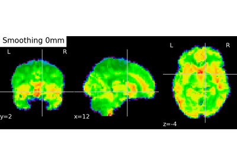

8. Nilearn usage examples¶
Warning
If you want to run the examples, make sure you execute them in a directory where you have write permissions, or you copy the examples into such a directory. If you install nilearn manually, make sure you have followed the instructions.
Contents


8.3. Decoding and predicting from brain images¶
See Decoding and MVPA: predicting from brain images for more details.

8.4. Functional connectivity¶
See Clustering to parcellate the brain in regions, Extracting functional brain networks: ICA and related or Extracting times series to build a functional connectome for more details.
8.5. Manipulating brain image volumes¶
See Manipulating images: resampling, smoothing, masking, ROIs… for more details.
